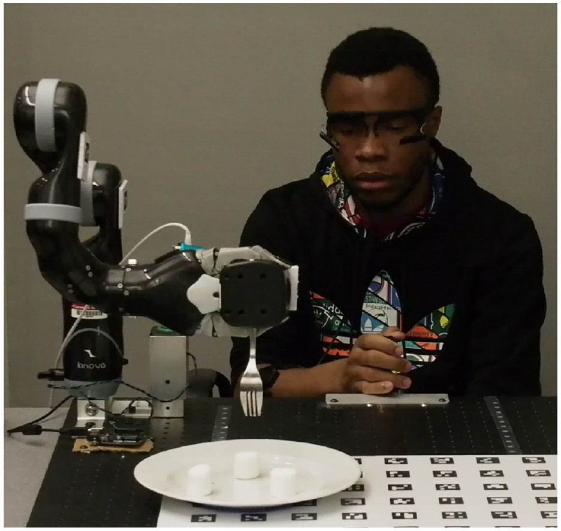
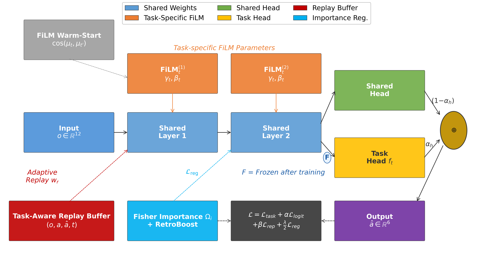
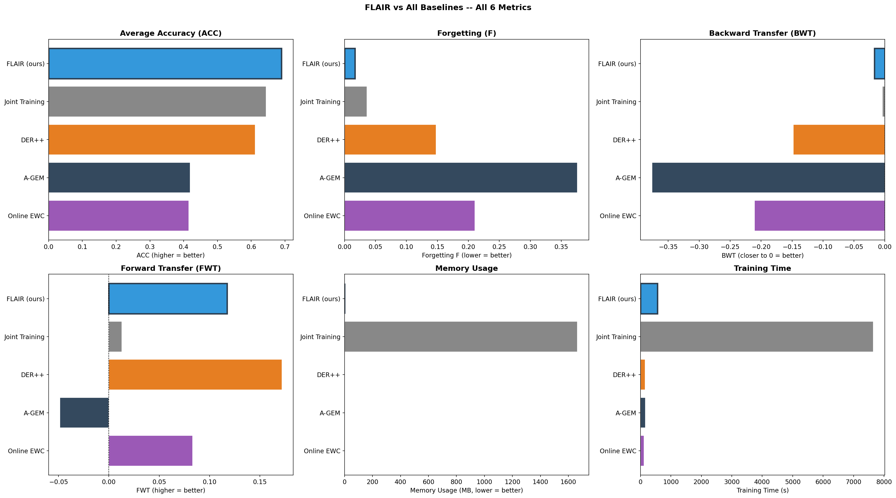
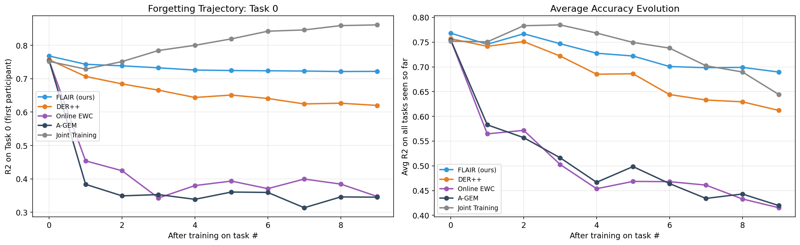

FLAIR: FiLM-based Learning with Adaptive Importance and Replay
Ameur Gargouria,b · Mohamed Karrayb · Mohamed Ksantinia
a ATISP Lab, ENET'Com, University of Sfax, Tunisia
b ESME Research Lab, Ivry-sur-Seine, France
Why assistive HRC needs incremental learning
Limitations of existing approaches
Architecture & training procedure
HARMONIC dataset & baselines
Comparative performance evaluation
Summary & future directions
Why assistive human-robot collaboration needs a new approach to incremental learning

HARMONIC shared-autonomy assistive eating task
In person-assistance, robots encounter new operators sequentially — each with distinct motor preferences and intent patterns.
Joystick commands (human intent), joint positions (robot state), and end-effector pose (task-space motion) must be modeled jointly.
Training on new users causes the model to forget previously learned collaboration behaviors — unacceptable in safety-critical settings.
Existing incremental learning families each address only part of the trade-off:
e.g., EWC, SI
✓ Retention
✗ Reduced plasticity
e.g., DER++, ER
✓ Memory of past data
✗ No parameter control
e.g., L2P, DyTox
✓ Task separation
✗ Parameter growth
Our insight: A hybrid algorithm that jointly integrates multiple strategies can overcome the limitations of each family alone — especially in multimodal HRC settings.
Key prior studies and the open challenge they leave unaddressed
Existing approaches are rarely designed as integrated incremental-learning systems that jointly optimize adaptation to new users and retention of prior user-specific motor collaboration patterns in multimodal HRC.
FiLM-based Learning with Adaptive Importance and Replay

MLP — 2 layers × 256 units
Per-task γt, βt parameters
Shared + task head (αh = 0.3)
After training on each task, FiLM parameters and task head are frozen — preventing retroactive modification and ensuring stability.
Standard MSE on current task data
Dark-knowledge consistency on replayed samples with adaptive weights wr
Direct MSE on replayed ground-truth actions
Fisher-based penalty: Σ Ωi(θi − θi*)2
Stores (o, a, â, t) — task identity routes each sample through its original FiLM branch during replay, ensuring correct feature modulation gradients.
Growing multiplier naturally increases regularization as forgetting risk grows with more tasks.
New task FiLM initialized from most similar prior task via cosine similarity of input statistics. Accelerates convergence for similar users.
Tasks experiencing more forgetting receive proportionally more replay emphasis.
HARMONIC dataset for multimodal human-robot collaboration
| Upper Bound | Joint Training |
| Regularization | Online EWC |
| Gradient | A-GEM |
| Replay | DER++ |
| Hybrid (ours) | FLAIR |
Comprehensive evaluation on the 10-task HRC benchmark
FLAIR surpasses the Joint Training upper bound (0.690 vs. 0.644) — demonstrating that per-user FiLM conditioning outperforms a single shared representation trained on all data.
| Method | ACC ↑ | F ↓ | BWT ↑ | FWT ↑ | Mem (MB) | Time (s) |
|---|---|---|---|---|---|---|
| Joint Training | 0.644 | 0.037 | −0.004 | +0.013 | 1664.2 | 7648 |
| Online EWC | 0.415 | 0.211 | −0.211 | +0.083 | 0.5 | 124 |
| A-GEM | 0.420 | 0.376 | −0.376 | −0.049 | 0.2 | 167 |
| DER++ | 0.612 | 0.148 | −0.148 | +0.172 | 0.9 | 154 |
| FLAIR (ours) | 0.690 | 0.017 | −0.017 | +0.118 | 1.3 | 555 |
vs. DER++ +12.7% ACC · 8.8× less forgetting · +0.37 MB
vs. Joint +7.1% ACC · 1279× less memory

FLAIR (blue) ranks #1 in ACC, F, and BWT while maintaining competitive FWT and practical memory/time costs.

FLAIR: 94.0% · DER++: 81.9% · EWC: 46.0% · A-GEM: 45.8%
FLAIR's R² on Task 0 stays nearly flat across all subsequent tasks — near-zero catastrophic forgetting.
Consistently high across all users — model does not over-specialize to a subset.
Summary and future directions
Hybrid Algorithm: FLAIR jointly integrates FiLM conditioning, task-aware replay with dark-knowledge distillation, Fisher-based importance regularization with RetroBoost, warm-start initialization, and adaptive replay weighting.
State-of-the-Art Performance: ACC = 0.690 surpasses all baselines and the Joint Training upper bound, with near-zero forgetting (F = 0.017).
Practical Efficiency: Only 1.3 MB memory overhead — 1,279× less than Joint Training, making it deployable in real assistive systems.
Future Work: Validation on additional benchmarks (Split-CIFAR, Permuted MNIST) and extension to class-incremental / task-agnostic settings.
Questions & Discussion
Ameur Gargouri
gargouri.ameur@enis.tn
ATISP Lab, University of Sfax · ESME Research Lab